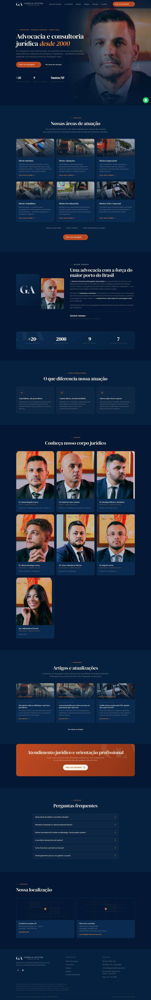

Proposta comercial · Julho 2026Uma página institucional pensada para dar destino ao tráfego pago, apresentar as áreas e a equipe do escritório e transformar visita em conversa no WhatsApp.
Hoje o investimento em Meta e Google Ads leva o interessado direto pro WhatsApp. Funciona pra captar, mas deixa duas coisas na mesa: quem ainda está pesquisando não tem onde se convencer, e o Google Ads perde qualidade sem uma página de destino própria. E quem procura "Garcia & Antunes" no Google hoje encontra uma página "em construção" — pior do que não ter site.
Campanhas de pesquisa que apontam pro WhatsApp têm índice de qualidade menor e CPC mais caro. Uma página própria melhora a nota e derruba o custo por clique.
Empresa e cliente pesquisam o nome do escritório antes de fechar. Hoje o resultado é um Instagram de 519 seguidores e um domínio "em construção" — nada que transmita os 20 anos de história.
Mais de 20 anos em Santos, uma equipe de 7 advogados e força nas áreas Marítima e Aduaneira — tudo isso é o maior ativo do escritório e hoje não está apresentado em lugar nenhum de forma completa.
Causa trabalhista ou bloqueio de gerenciadora mexe com o sustento da família. O motorista precisa ver um escritório sério antes de entregar o caso — e site próprio, com endereço, OAB e corpo jurídico à mostra, é o que separa o escritório estabelecido do perfil improvisado.
Todo lead hoje é pago: parou o anúncio, parou o telefone. Um site otimizado passa a ranquear no Google por conta própria — e cada busca por "advogado marítimo Santos" ou "advogado aduaneiro" que cair no site vira contato sem custo de mídia.
Com site próprio, dá pra instalar Pixel e tag do Google, medir o que o anúncio realmente gera e remarketar quem visitou sem chamar. Hoje isso se perde.
Não é mockup genérico: é a página real, com a identidade visual que já usamos nos criativos do escritório — azul-marinho, terracota e a tipografia serifada que virou marca do Garcia & Antunes no feed.

Uma página única, com todas as seções necessárias pra apresentar o escritório e converter — sem inflar o projeto com páginas que ninguém acessa.
Headline de especialidade, chamada direta pro WhatsApp e os selos de autoridade (anos de atuação, especialidade, sede).
Seis áreas em destaque com foto e descrição — Marítimo, Aduaneiro, Empresarial, Trabalhista, Previdenciário e Civil — mais Consumidor, Tributário e Administrativo em destaque secundário.
História desde 2000, o posicionamento em Santos/SP e a forma de atender — com assinatura do sócio responsável.
Dados institucionais reais e verificáveis, dentro do que o Provimento 205/2021 da OAB permite divulgar.
Três blocos explicando especialização, contato direto e transparência sobre riscos — sem promessa de resultado.
Card por advogado com foto, OAB e área de atuação. Estrutura pronta pra crescer conforme o time.
Seção de conteúdo na home com os últimos artigos, listagem completa e página de leitura otimizada para o Google. Cada artigo entra com título, resumo, imagem e endereço próprio — é o que faz o escritório aparecer em busca sem pagar por clique.
Seis dúvidas reais do público (bloqueio, agregado, tempo de espera) em formato sanfona — que também é conteúdo indexável pro Google.
Endereço em Santos, mapa, telefone, e-mail e horário. Botão flutuante de WhatsApp em toda a navegação.
Navegação, redes sociais, dados do escritório e a nota de conformidade com o Código de Ética.
Cada linha do texto é escrita dentro do Provimento 205/2021: sem promessa de resultado, sem sensacionalismo, sem captação indevida. Site que não gera dor de cabeça na Seccional.
Código próprio, sem construtor pesado. Fontes locais, imagens otimizadas, nada de plugin travando o carregamento. Velocidade é critério de ranqueamento do Google: o mesmo trabalho que sobe a posição na busca orgânica derruba o custo por clique no Ads.
Quem já cuida das campanhas está construindo o site. Pixel, conversões e UTMs saem configurados no dia um, alinhados às campanhas que já rodam.
Fotos dos advogados, números de OAB, endereço confirmado, dados dos sócios e definição do domínio.
Redação final de todas as seções, montagem da página e adaptação para celular.
Montagem da listagem e da página de artigo, mais a redação dos três textos iniciais otimizados para busca.
Você navega na versão real e devolve os ajustes de uma vez.
Aplicação dos ajustes, instalação de Pixel e tags, testes de velocidade e de WhatsApp.
Domínio apontado, site publicado e campanhas de Google Ads redirecionadas para a nova página.
Pagamento único. Sem mensalidade obrigatória, sem taxa de licença, sem amarra de plataforma — o site é do escritório.
Projeto fechado, com escopo, prazo e entregáveis definidos nesta proposta.
| Registro do domínio (.adv.br ou .com.br) | ~R$ 40/ano |
| Hospedagem (plano recomendado) | ~R$ 25/mês |
Valores de mercado, contratados no nome do escritório. A Propulsão Jurídica orienta a contratação e faz toda a configuração — sem cobrar nada por isso.
Basta responder confirmando no WhatsApp. Já mando a lista do que preciso do escritório (fotos, OABs, endereço) e o cronograma começa a contar no dia útil seguinte.
Confirmar e começar →Proposta válida por 15 dias a partir de 23/07/2026. Valores e prazos sujeitos a revisão após esse período.